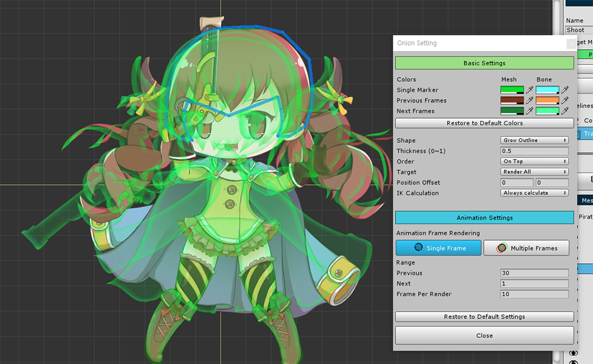
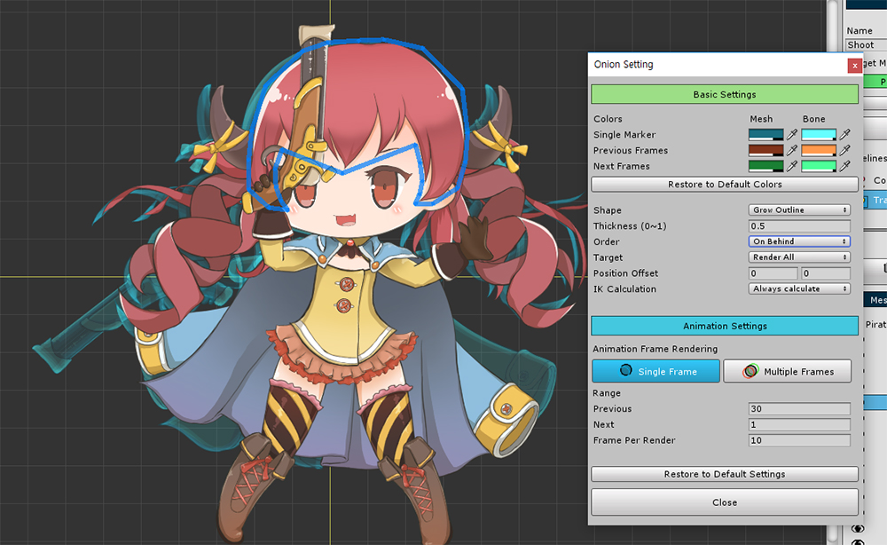
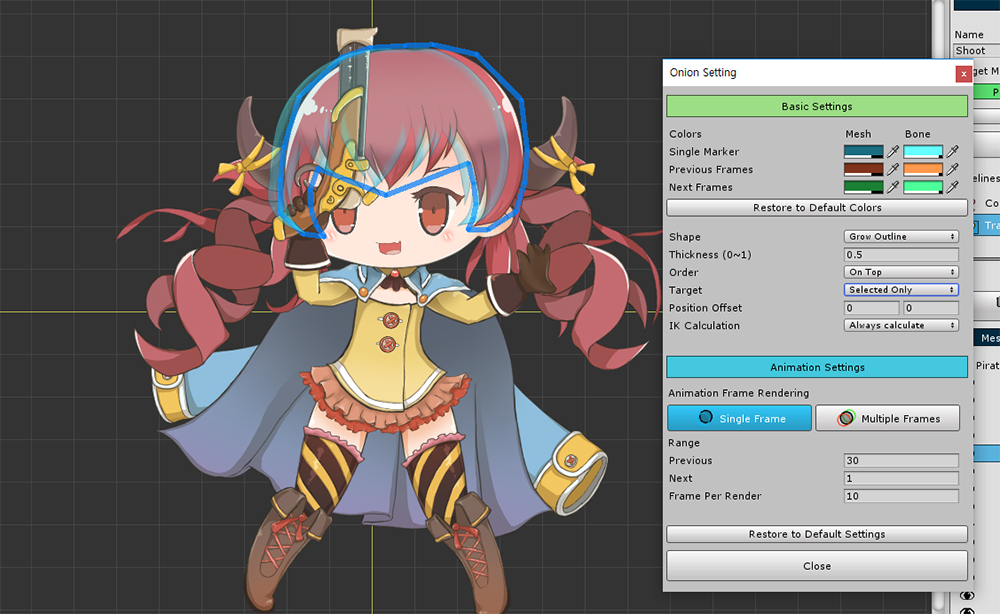
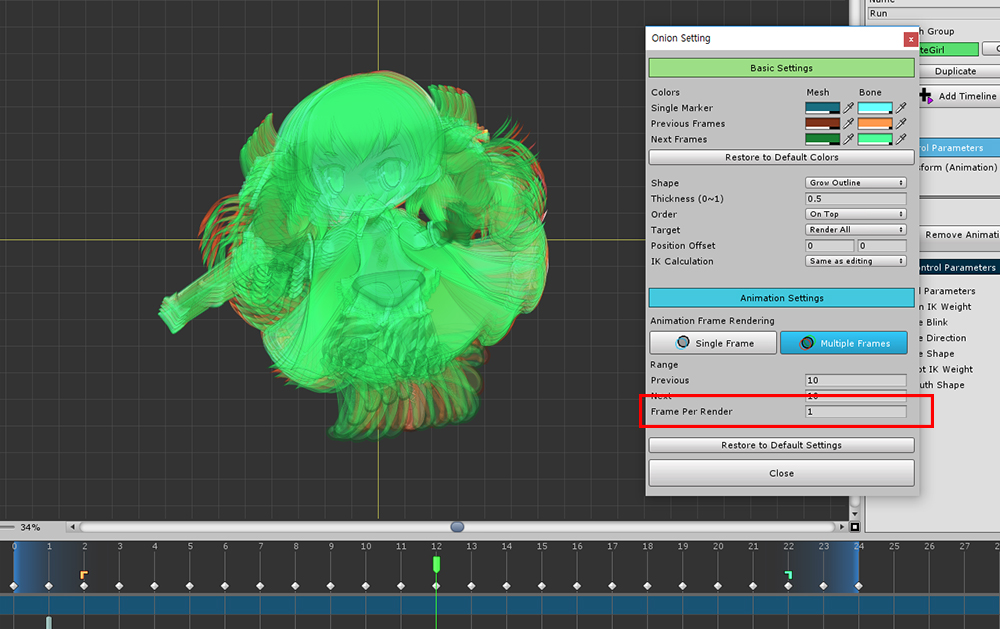

AnyPortrait > 메뉴얼 > 잔상(Onion Skin) 기능
잔상(Onion Skin) 기능
1.3.0
애니메이션을 만들 때 각각의 프레임을 겹쳐놓으면 마치 애니메이션의 잔상과 같은 느낌이 듭니다.
이 잔상 효과를 Onion Skin 효과라고 합니다.
(직역하면 양파 껍질 효과이며, 얇은 종이 위에 그림을 겹쳐 그리는 모습이어서 지어진 이름입니다.)
이 잔상 효과를 이용하면 애니메이션의 다른 프레임을 비교하거나, 다른 상태의 모습과 비교하면서 작업할 수 있습니다.
이 페이지에서는 잔상(Onion Skin) 기능을 사용하는 방법을 다룹니다.

컨트롤 파라미터를 이용하여 모디파이어를 만드는 경우 잔상 효과를 사용할 수 있습니다.
(1) 잔상으로 등록하고자 하는 컨트롤 파라미터 값을 지정합니다.
(2) 잔상 효과를 보이게 하는 버튼(단축키 : O )을 누르고 (3) 잔상 등록 버튼을 누릅니다.
이렇게 하면 현재 상태가 잔상으로 등록이 됩니다.
보기 메뉴에서의 잔상(Onion Skin)

AnyPortrait v1.3.0부터는 잔상을 보이게 하거나 등록하는 버튼이 보기 메뉴로 이전됩니다.

보기 메뉴에서 Show Onion Skin을 켜면, 위와 같이 잔상 등록 버튼이 나타납니다.
또한 잔상 설정을 변경하려면 Onion Skin > Settings를 누르면 됩니다.
UI만 변경되었으며 동작하는 방식은 기존과 동일합니다.

컨트롤 파라미터를 움직이면 등록된 모습과 비교하여 작업을 할 수 있습니다.
잔상 효과를 켠 상태로 모디파이어 편집이 가능합니다.
(참고 : 이 상태에서 잔상을 안보이게 해도 등록된 잔상은 유지됩니다.)

애니메이션도 잔상 효과를 사용할 수 있습니다.
(1) 잔상으로 등록하고자 하는 프레임으로 이동을 합니다.
위에서 했던 것과 마찬가지로 (2) 잔상 효과를 켜고 등록을 합니다.

이제 다른 프레임으로 이동을 하면 잔상과 비교하여 작업을 할 수 있습니다.
잔상으로 등록된 프레임에는 하늘색 잔상 아이콘이 나타나는 것을 확인할 수 있습니다.
고급 설정과 연속된 잔상 렌더링

Ctrl 를 누른 채로 잔상 버튼을 누르면 설정 다이얼로그가 나타납니다.
여기서 잔상을 어떻게 렌더링 할 것인지 설정할 수 있습니다.
(Mac OSX에서는 Command 를 누르면 됩니다.)

1. 색상
: 잔상의 색상을 설정합니다. 단일/다중 프레임, 메시와 본에 따라 각각 색상을 지정할 수 있습니다. "Restore to Default Colors" 버튼을 눌러서 색상값을 초기화할 수 있습니다.
2. 렌더링 방식
- Shape : 렌더링되는 형태입니다. Glow Outline을 선택하면 외곽선이 렌더링되고, Solid를 선택하면 일반적인 메시 렌더링처럼 나타납니다.
- Thickness : Glow Outline방식으로 렌더링을 하는 경우 외곽선의 두께 비율을 설정합니다.
3. 렌더링 순서와 대상
- Order : 잔상을 앞에 렌더링할 지, 뒤에 렌더링할 지 결정합니다.
- Target : 모든 객체를 렌더링할 지, 선택한 객체만 렌더링할 지 결정합니다.
4. 위치 오프셋 : 주어진 값 만큼 이동하여 렌더링합니다.
5. IK 계산
: 편집 모드인 경우 IK 계산이 중지되는데, 잔상 렌더링을 할 때 IK를 계산한 결과를 보여줄 지 여부를 선택할 수 있습니다.
6. 단일 프레임 / 다중 프레임
: 애니메이션 편집 시 1개 또는 여러개의 프레임에 대해서 잔상을 렌더링할 수 있습니다.
7. 다중 프레임 렌더링 범위와 렌더링 프레임 간격
: 이전, 이후 프레임 범위를 설정하고, 몇 프레임당 렌더링이 되는지 설정합니다.
8. 잔상 설정 초기화

잔상 색상을 변경할 수 있습니다.

Shape를 Glow Outline에서 Solid로 변경을 하면 속이 채워진 방식으로 렌더링됩니다.

Shape가 Glow Outline일때, Thickness의 값을 줄이면 화면과 같이 가는 선으로 렌더링됩니다.

Order값을 On Behind로 변경하면 잔상이 뒤에서 렌더링됩니다.

Target을 Selected Only로 변경하면 현재 선택 중인 객체만 렌더링 됩니다. 메시와 본에 대해서 모두 가능합니다.

Position Offset의 값을 변경하면 잔상의 위치가 이동합니다.

Multiple Frames 버튼을 눌러서 다중 프레임에 대해서 잔상을 볼 수 있습니다.
이 기능은 애니메이션 편집 시에 동작하며, 화면 하단의 타임라인 UI에서 렌더링되는 범위가 아이콘으로 나타납니다.

Frame Per Render는 "몇 프레임당 잔상이 렌더링 될 것인가"를 의미합니다.
최소 1의 값을 가지며, 값이 적을 수록 렌더링 횟수가 많아집니다.
이때, 에디터가 다소 느려질 수 있습니다.

다중 프레임 렌더링 상태일 때 Position Offset을 설정하면 각 잔상의 위치가 Offset만큼 이동하여 나타납니다.
연속된 동작을 확인할 때 편리합니다.